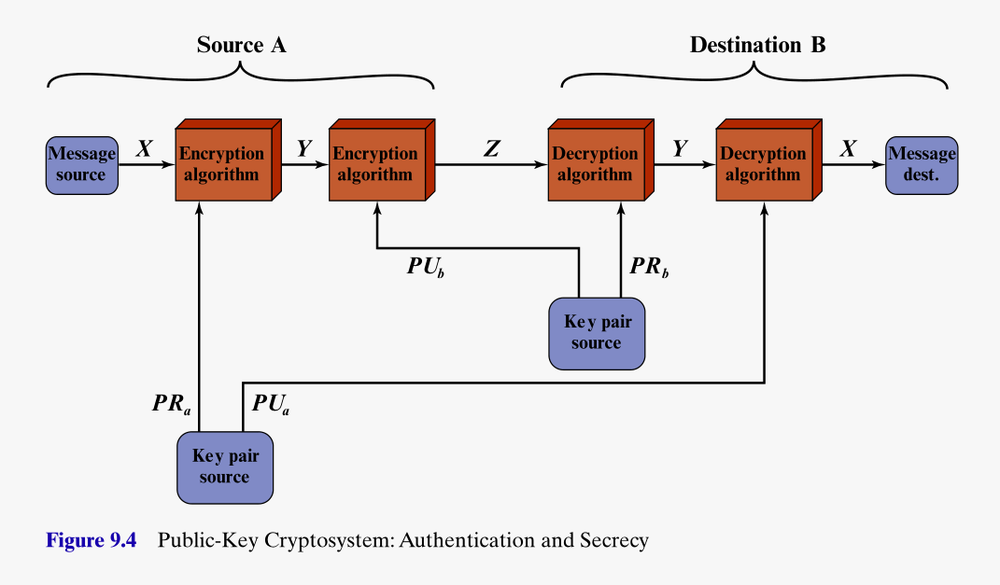

Public Key Cryptography
Killian O’Brien
6G6Z0024 Applied Cryptography 2024/25
Lecture Week 07 – Wed 13 November 2024
Introduction and initial promise
Reading:
Stallings,
Chapter 9, Public-key cryptography and RSA
Symmetric ciphers, such as DES, and then AES, can provide
excellent security, but rely on the distribution of secret keys
between the parties.
- How are these secret keys to be distributed in a secure and
efficient way?
Public-key cryptography, an asymmetric approach (different keys
for encryption and decryption) solves this by using two keys,
- a public key (which does not need to be kept
secret) to encrypt messages,
- and a private key (which must be kept secret, but
which only the receiver needs) to decrypt messages.
Public-key cryptography promises and enables something, which
seems almost paradoxical. Suppose that
- two parties, Alice and Bob, wish to communicate,
- they have never met or communicated before, and do not have any
access to pre-arranged secret keys,
- ALL their communications can be intercepted and
inspected by the eavesdropper, Eve,
- nevertheless, using public-key techniques, Alice and Bob can
exchange some initial unencrypted communications, and then pass into
secure encrypted communication,
- even though ALL their initial unencrypted
communications were intercepted, read and understood by Eve.
Discovery
- Discovered by Whitefield Diffie and Martin Hellman at Stanford
University in 1976.
- Though in 1997, UK government declassified material revealing that
James Ellis, Clifford Cocks and Martin Williamson, working at GCHQ, made
the same discoveries earlier in the 1970s.
- Two problems are solved by these methods
- encrypted communications without the need for secretly pre-arranged
keys,
- digital signatures enabling the cryptographic proof
that a message was authored by the claimed author.
Basic principles / requirements
 A pair of related keys are generated by the user Alice, a public
key \(\text{PU}_a\), and a
private key, \(\text{PR}_a\).
A pair of related keys are generated by the user Alice, a public
key \(\text{PU}_a\), and a
private key, \(\text{PR}_a\).- The public key is published for all to see.
- The private key is kept private and secure.
- Messages can be encrypted using this public key, and communicated to
Alice.
- The messages can be decrypted by Alice using her private key.
- Details of the public key, encryption and decryption algorithms are
all public.
The eavesdropper’s/cryptanalsyt’s task
 The cryptanalyst intercepts encrypted message \(Y\) and attempts to form estimates of the
original plaintext \(X\) or the private
key \(\text{PR}_b\).
The cryptanalyst intercepts encrypted message \(Y\) and attempts to form estimates of the
original plaintext \(X\) or the private
key \(\text{PR}_b\).
Outline of a digital signature approach
- 
Using keys of both sender and recipient can enable
authenticated and encrypted communication.
- The receiver Bob is assured that only the holder of the private key
corresponding to Alice’s public key could have authored this message
\(X\).
- Alternatively, the middle encryption step can be skipped, and Alice
can simply publish the encrypted message \(Y\), which anyone can decrypt with her
public key \(\text{PU}_a\). Any such
receiver is assured that only the holder of the private key
corresponding to Alice’s public key could have authored this message
\(X\).
Firming up the requirements (Stallings, pg. 294)
- It is computationally easy for a party \(B\) to generate keys pairs \(PU_b\) and \(PR_b\).
- It is computationally easy for a sender \(A\), with the public key \(PU_b\) and plaintext \(M\), to generate the corresponding
ciphertext \[C = E(PU_b,M).\]
- It is computationally easy for the receiver \(B\) to decrypt \(C\) using \(PR_b\), to recover \(M\) as \[M =
D(PR_b,C) = D \big ( PR_b, E(PU_b,M) \big ).\]
- It is computationally infeasible for an adversary, knowing the
public key \(PU_b\), to determine the
private key \(PR_b\).
- It is computationally infeasible for an adversary, knowing the
public key \(PU_b\) and ciphertext
\(C\), to recover the original message
\(M\).
While not essential, the following useful property is possessed by
the RSA implementation of public-key cryptography.
- The two keys can be applied in either order, i.e. \[M = D \big ( PR_b, E(PU_b,M) \big ) = D \big (
PU_b, E(PR_b,M) \big ) .\]
This is all very nice to describe, but what exactly is the
technology that can enable such a scheme?
The RSA system
- Discovered in 1978 at MIT by Ron Rivest, Ade
Shamir and Len Adleman.
- It remains one of the most widely used general purpose public-key
schemes.
- It deals with messages, or message blocks, encoded as integers in
the range \(0\) to \(n-1\), for some suitably large \(n\).
- Typicall size for \(n\) might be
1024 bits, or around 309 decimal digits.
- RSA makes use of exponentials in modular arithmetic.
- The message \(M\) is an integer in
the range \(0 \leq M \leq n-1\).
- The receiver chooses integers \(e\)
and \(d\), with the property that \[ed \equiv 1 \pmod{\phi(n)},\] i.e. \(e\) and \(d\) are multiplicative inverses of each
other modulo the Euler totient function value \(\phi(n)\).
- The public key is \(PU = (e,n)\),
the private key is \(PR = (d,n)\).
- The plaintext \(M\) is encrypted as
\[C = (M^e \, \, \text{mod} \, \,
n).\]
- The ciphertext \(C\) is decrypted
as \[ (C^d \, \, \text{mod} \, \, n ) =
((M^e)^d \, \, \text{mod} \, \, n ) = (M^{ed} \, \, \text{mod} \, \, n )
= (M^1 \, \, \text{mod} \, \, n) = M.\]
- The security comes from the fact that computing \(\phi(n)\) from \(n\) is hard.
RSA procedure
 Figure on the right, from Stallings, outlines the procedure.
Figure on the right, from Stallings, outlines the procedure.
A small \(n\) example
 Extract from Stallings pg. 298, shows the calculations for an example
based on a small \(n\). Remember a
typical size for \(n\) from real usage
is circa 309 decimal digits.
Extract from Stallings pg. 298, shows the calculations for an example
based on a small \(n\). Remember a
typical size for \(n\) from real usage
is circa 309 decimal digits.- The Euler totient function value \(\phi(n)\), when \(n=pq\), for distinct primes \(p\) and \(q\), is given by \[\phi(n) = \phi(pq) = (p-1)\cdot
(q-1).\]
- The reason that computing \(\phi(n)\) from \(n\) is hard is that
factoring \(n\) into the product \(p \cdot q\) is hard. Given such a large
\(n\) there is no easy way to discover
its prime factors.
- the best known algorithms for factoring integers will take a
long time to factor \(n\), given any realistic amount of
computing power available.
Modular arithmetic reminder
- RSA involves using \(c,d\) that are
multiplicative inverses of each other modulo \(\phi(n)\).
- Multiplicative inverses are found using the extended Euclidean
algorithm
- If \(a\) is coprime to a modulus
\(m\), i.e. $(a,m) = 1,
- Run the extended Euclidean algorithm to find integer coefficients
\(x,y\) satisfying \[xa + ym = 1.\]
- Then the inverse is given by \[a^{-1} \,
\, \text{mod} \, \, m = (x \, \, \text{mod} \, \, m ),\] because
\[xa = 1 - ym \equiv 1
\pmod{m}.\]
Factorization and the choice of \(p,q\)
- Factorization of large \(n\) is
computationally hard
- even when using advanced number field sieve factoring
algorithms.
- But computational power increases and theoretical advancements
should be expected to continue.
- The counter to both these possibilities is to increase the size of
\(n\), to make factoring harder.
- Recent advice from standards agencies
- NIST 2015 recommends key lengths of 2048 bits or longer.
- EU Agency for Network ad Information Security 2014 recommends 3072
bits for future developments.
- Other guidance on choice of \(p,q\)
is
- \(p\) and \(q\) should be of similar digit length. So
for a 1024-bit key, they should be chosen in the range \[10^{75} \leq p,q \leq 10^{100}.\]
- both \(p-1\) and \(q-1\) should contain a large prime
factor
- \(\gcd(p-1,q-1)\) should be
small.
- However finding large primes is computationally hard, similar to
factoring.
- In practice, for choosing such large primes, probabilistic prime
tests, such as the Miller-Rabin test, need to be used.
- This test allows one to choose an integer which is probably
a prime.
- But this probability can be made arbitrarily close to 1, i.e. as
near certain as one would like. (See chapter 2 of Stallings for details
on Miller-Rabin test)